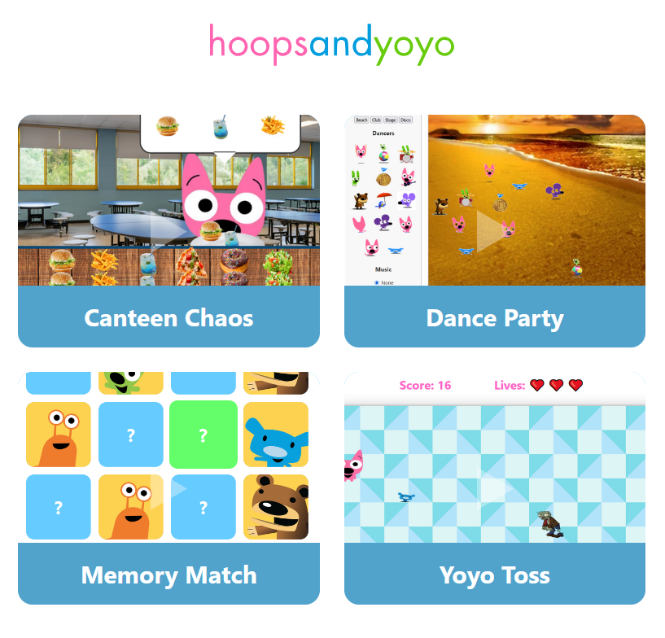
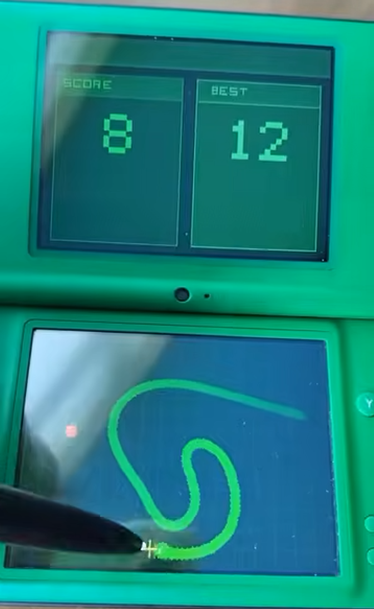
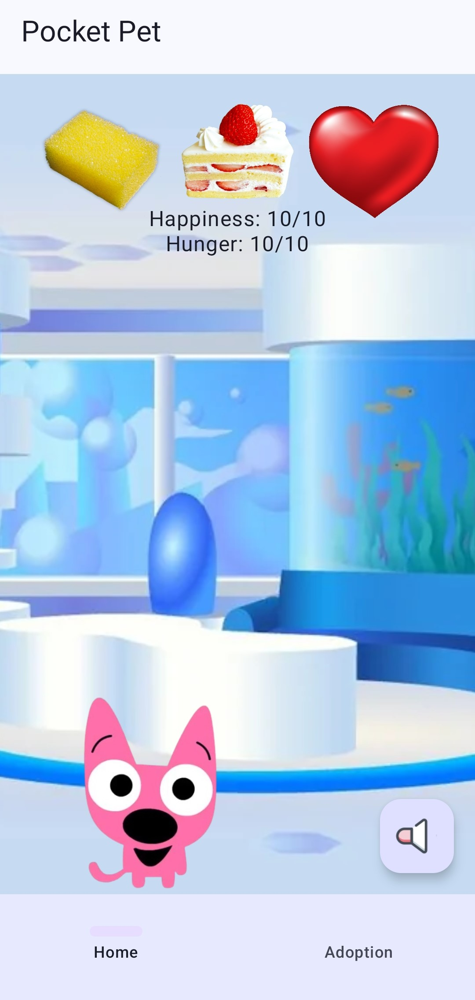
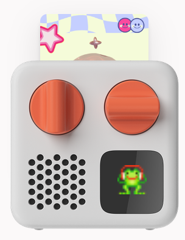
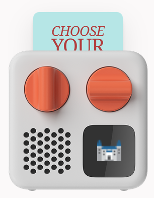
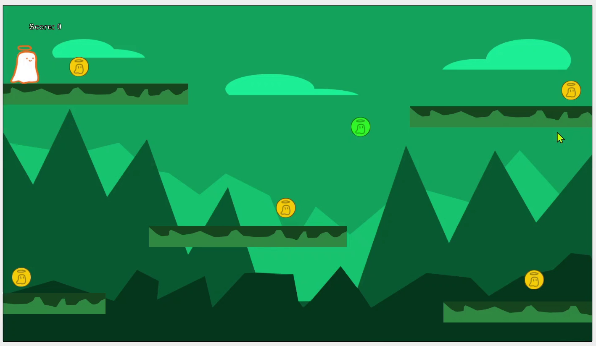
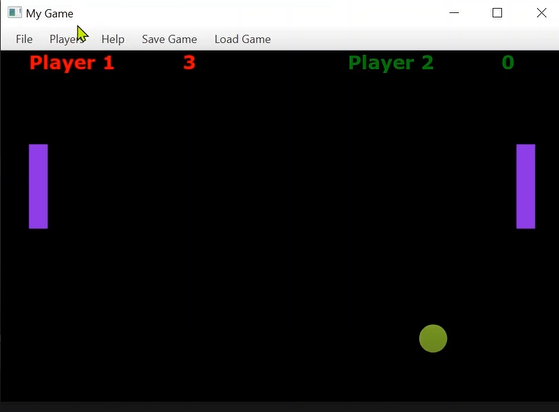

Web Games

Hoops & Yoyo Game Collection
Personal ProjectA playful collection of hoops & yoyo themed browser games built with HTML, CSS, and JavaScript, reminiscent of classic Flash-era games.
View
Conveyor Panic Game
Personal Project The player sorts items off a conveyor belt into bins before the clock runs out in this 60 second arcade game. Built using Unity. Graphics still in progress. ViewVideo Games

Smooth Snake Nintendo DS Game
Personal ProjectA stylus-controlled snake game for the Nintendo DS made with C.
ViewMobile Games

Pocket Pet app
A virtual pet app developed in Kotlin, utilising room database for keeping track of each pet's details
ViewPhysical Games

Yoto Trivia Game
Personal ProjectAn interactive trivia game for the Yoto player. A Python server streams live audio to a physical card with random questions every game, instant feedback, and a final score reveal.
View
Choose Your Own Adventure Yoto Game
Personal ProjectA choose your own adventure audio game for the Yoto player. Insert the card, listen to the story, and turn the knob to choose your path with a different ending every time.
ViewOther Projects

Level Design
This is my level design work for an upcoming 2D platformer with 5 levels. As this project will take some time I want to document the work as it happens in this space.
ViewCollege Projects
Ghost Goes Platformer Game
A 2D platformer where you collect coins and navigate sticky platforms, built in Java with Greenfoot as a group project.
View
Pong Game
An object oriented approach to a pong game. Includes multiplayer and save file features. Created using Java
ViewAbout Me
I'm a software developer with a lifelong obsession with games, toys, and the little details that make interactive experiences feel alive. I build things that care about feel and player joy as much as technical correctness, whether that's a DS puzzle platformer, a browser mini-game, or a virtual pet app. My background spans Unity 2D, BlocksDS, Python, JavaScript, Kotlin, and web development, but what drives me is the creative side: the moment a mechanic clicks, a character feels right, or a small interaction makes someone smile. I'm currently building out my game design portfolio and looking for roles where craft and imagination sit alongside code.